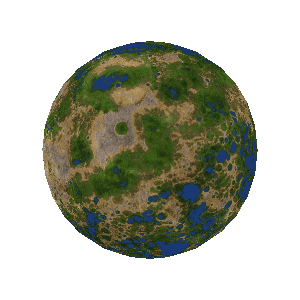

Universo
Zenophyros é um sistema de RPG de fantasia épica com foco em exploração espacial. Ele possui uma temática medieval clássica, com guerreiros, arqueiros, poções e magias, só que eles não estão presos a um único planeta. Se magia existe, por que se limitar à terra média?
Pessoas podem ir para portões de teletransporte visitar seus parentes na galáxia mais próxima. Não precisamos de naves espaciais, robôs, implantes cerebrais ou ciborgues. As casas são de pedras luxuosas, conjuradas por feitiços de construtores. Não há ruas, pois as carroças podem voar. Guerras são travadas usando grandes campos de anulação de magias conjuradas, onde os guerreiros precisam usar armas mágicas. As batalhas espaciais envolvem deuses, dragões e criaturas cósmicas que rasgam o tecido da gravidade e distorcem o espaço-tempo.
Esta era não é o futuro, é um universo alternativo cheio de aventureiros, missões e entidades malignas planejando consumir planetas. Isto é Zenophyros!
